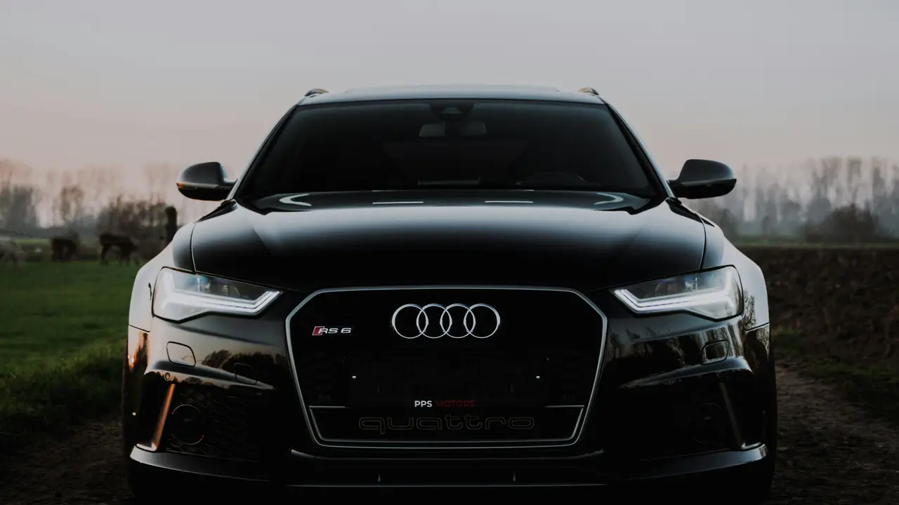
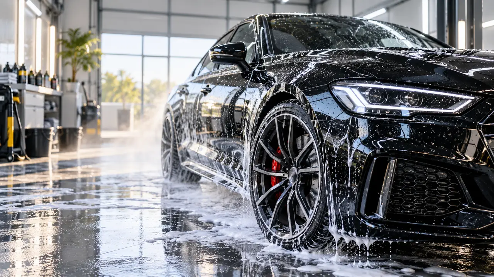
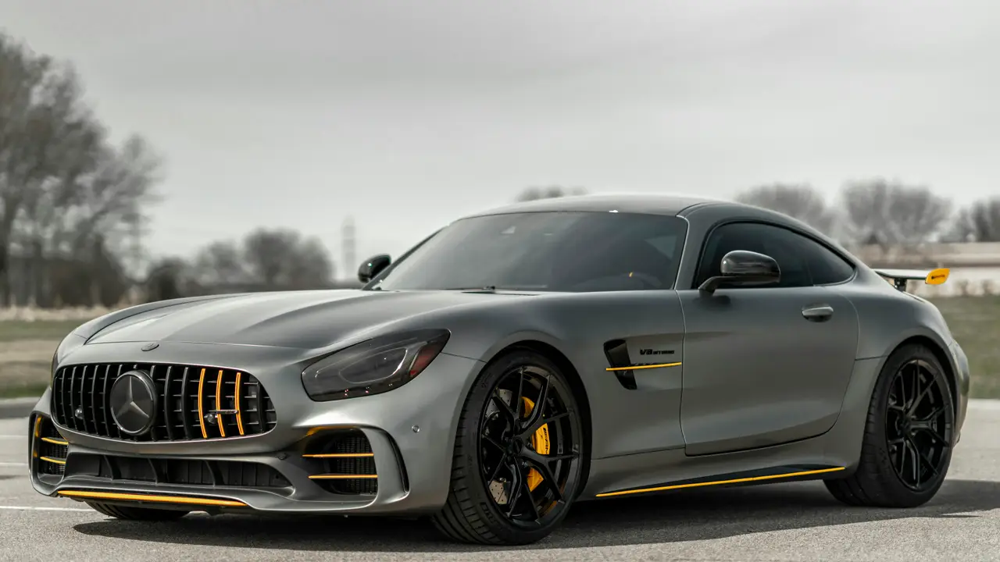
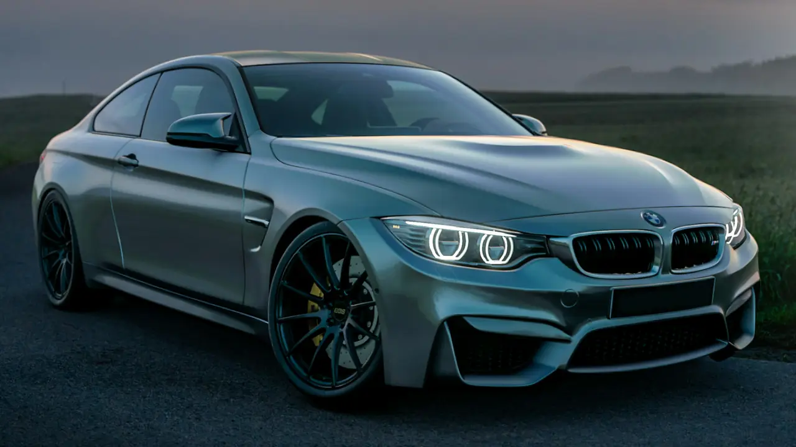
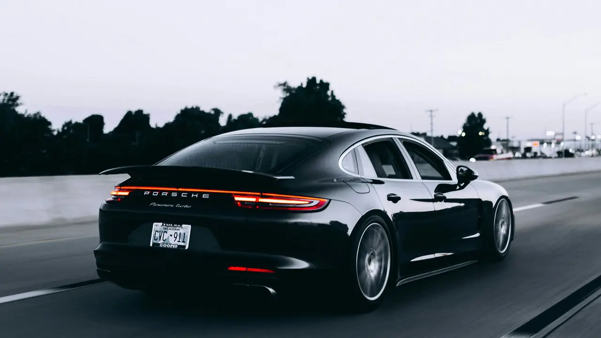

Our work
Clean cars. Real transformations.
Paintwork, wheels and the finishing details that make a car feel new again — a closer look at the care behind every valet.
Photo gallery
-

Snow foam pre-washExterior -
Alloy & caliper cleanWheels -
Headlight & paint glossDetail -

Two-bucket hand washExterior -
Safe contact washDetail -

Matte paint careExterior -
Gloss black alloysWheels -

Clear headlight lensesDetail -
Deep gloss blackExterior -
Spoke-by-spoke detailWheels -
Panel & lens finishDetail -
Wheels & archesWheels -

Ready for the roadExterior -
Satin grey finishExterior -
Bright white paintworkExterior


Photos show the kind of finish we work to. We're adding St Johns Park's own customer before-and-after sets as jobs are photographed.